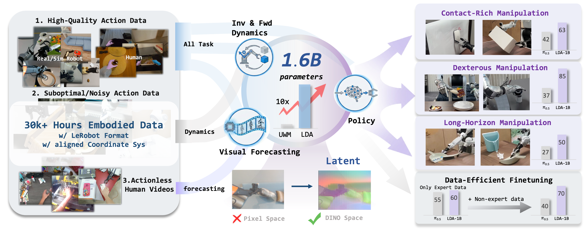

Xuheng Zhang
I'm Xuheng Zhang, at EECS in Peking University, currently a sophomore student in the Intelligent Science and Technology program (Zhi Class) at Peking University.
My long-term goal is to build robotic systems that generalize broadly in complex, human-centered environments. I believe scalable intelligence requires moving beyond imitation to acquire fundamental world dynamics during pre-training—the key to transferable physical understanding. Currently, I focus on pre-training and RL post-training of VLA and world model-based foundation models to embed these dynamics for robust manipulation, ultimately aiming to unify high-level perception, planning, and low-level action within a physically grounded framework.
Apart from my research interests, I enjoy rock climbing, I'm a v3 level climber, and I find it a great way to challenge myself both physically and mentally. Besides, I also enjoy traveling, photography and ultimate frisbee.

- 2024-2025: National Scholarship (Highest honor for undergraduates in China)


Research Intern

EECS